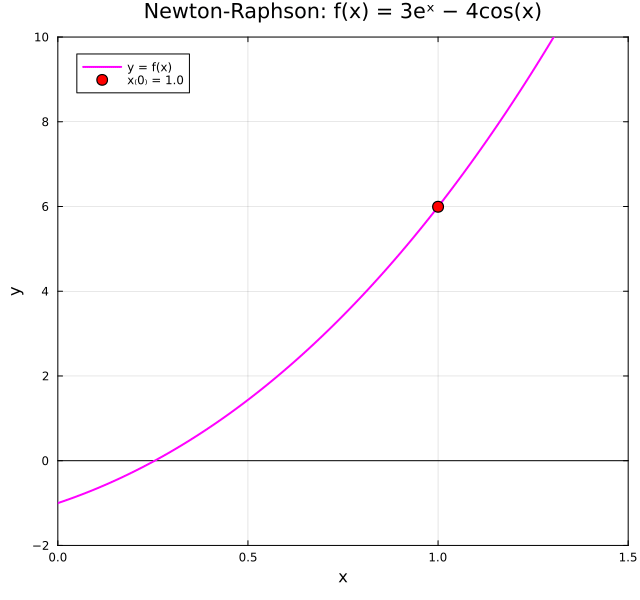
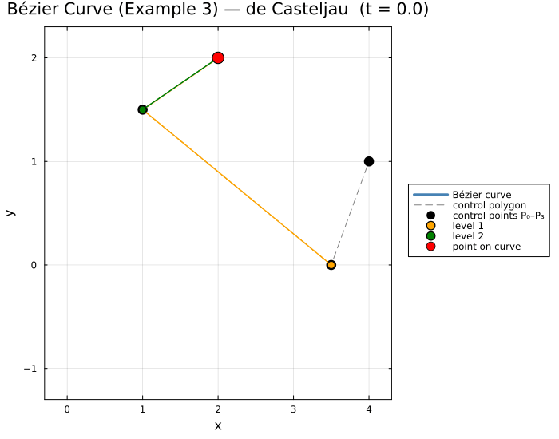
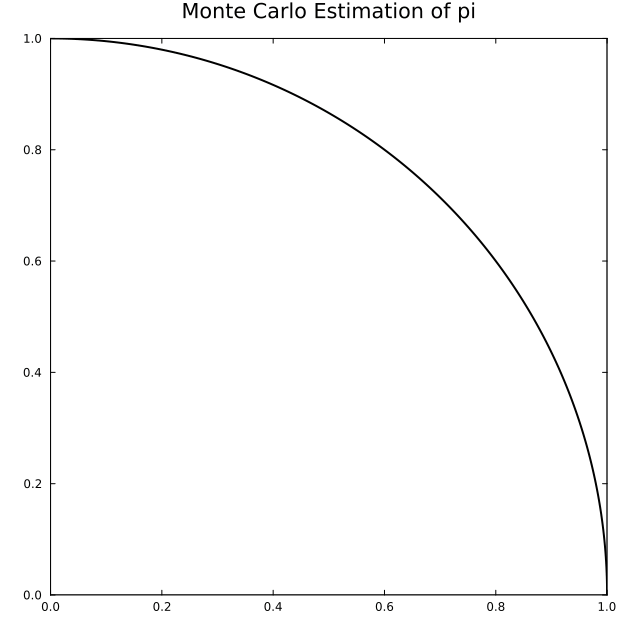

Jason H. Nicholson
You can find the source code at https://github.com/jasonnicholson/jasonnicholson.github.io. If the domain is ever lost or not working, https://jasonnicholson.github.io should still work.
110+ numerical-methods pages
400+ animations
50+ blog posts since 2015
12 regularizeNd tutorials & articles
Looking for one specific method? Use the search in the top bar (press /).
Where do you want to go?
Numerical Methods
Short explanations, fully worked examples, and animations for root finding, linear systems, interpolation, integration, differential equations, eigenvalues, and optimization. Inspired by John H. Mathews’ numerical analysis site.
Popular: Newton-Raphson · Cubic Splines · Runge-Kutta · Gauss-Legendre
regularizeNd
A MATLAB function that fits a smooth, gridded surface to scattered data in any number of dimensions. Learn to use it from a tutorial series, or learn how it works from the foundation pages and a deep-dive article.
Start: Part 1: Introduction · Foundations · Deep dive · Download
Blog
Notes from a decade of engineering work: numerical math and optimization, CFD and FEA simulation, controls, programming, and building workstations and toolchains.
Topics: Math · Simulation · Programming · DevOps
Tools & Resources
Secant/Muller Inverse Solver. An interactive calculator that solves f(x) = target in your browser. More calculators.
System Identification. A curated list of books, courses, and researchers for learning system identification.
Numerical Methods by chapter
Every page explains a method and works an example by hand, and most animate it.
   Least Squares Polynomials
Least Squares Polynomials  Fourier Series
Fourier Series  Runge-Kutta
Runge-Kutta
Fundamentals start here
Big “O” Truncation Error: how the error of a method shrinks as the step size shrinks. The rest of the chapters use this idea.
Nonlinear Equations f(x) = 0 17
Bisection · Newton-Raphson · Secant · Brent’s · Broyden’s
Linear Systems AX = B 15
Gauss-Jordan · LU Factorization · Jacobi & Gauss-Seidel · SOR · Simplex
Function Approximation 17
Taylor Series · Padé · Lagrange · Cubic Splines · Chebyshev
Curve Fitting 8
Least Squares Lines · Least Squares Polynomials · Nonlinear Curve Fitting · Logistic Curve
Numerical Differentiation 3
Difference Formulas · Richardson Extrapolation · Deriving Formulae
Numerical Integration 14
Trapezoidal · Simpson’s · Romberg · Gauss-Legendre · Monte Carlo
Ordinary Differential Equations 21
Euler’s · Runge-Kutta · Runge-Kutta-Fehlberg · Adams-Bashforth-Moulton · Shooting
Partial Differential Equations 3
Eigenvalues & Eigenvectors 10
Power Method · Jacobi Method · QR Method · Householder · Matrix Exponential
Optimization 7
Golden Ratio Search · Nelder-Mead · Powell’s · Steepest Descent · Newton’s Search
Applied Models across chapters
Pendulum · Projectile Motion · Lorenz Attractor · Lotka-Volterra · Spring-Mass · Kirchhoff’s Law · Earthquake Model
Latest from the blog
Browse by topic: Math Optimization MATLAB Simulation CFD FEA CAE Controls System ID Programming DevOps Computing Video Running
| Date | Title | Categories |
|---|---|---|
| Sep 7, 2026 | Notes on FFT | MATLAB |
| Sep 5, 2026 | Learning Python as an Experienced Programmer | programming |
| Aug 21, 2026 | Newton step driven by Fixed Point Theorem | math, programming |
| Aug 15, 2026 | Reference to World’s Toughest Mudder 2016: A Cautionary Tale | running, endurance, obstacle-course-racing, ultramarathon, mudder |
| Jun 5, 2026 | FFMetrics | video |
| May 24, 2026 | When Turning OSQP Scaling Off Wins on a Constrained Least-Squares QP | optimization, MATLAB |